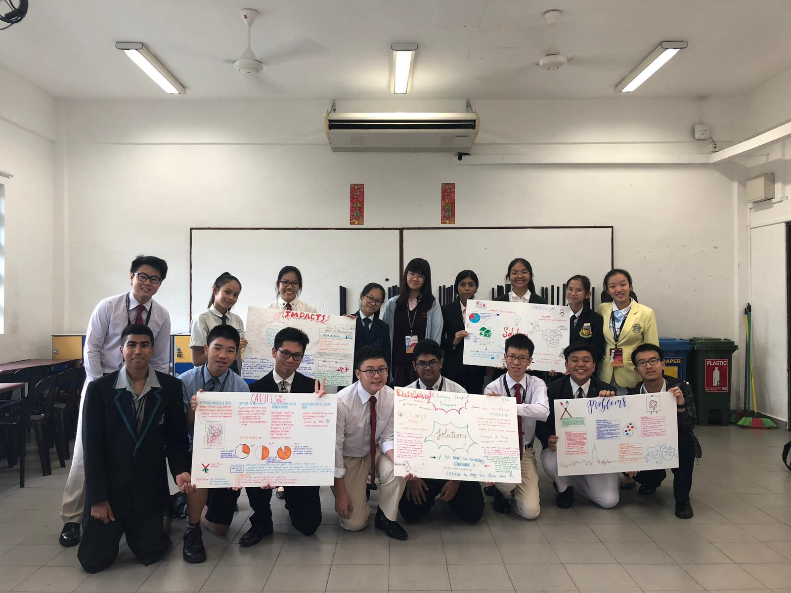

Youth Faculty 4: Appreciation of The Arts
Under Youth Assembly 2: The Arts
Hello! We are Youth Faculty 4, and the issue we are discussing is Appreciation of the Arts. What is appreciation of the arts? Well, we have defined it as the the sense of artistic liking for concepts and methods in the philosophy of arts. Appreciating with professionalism includes critically analyzing the design, and technique used, as well as studying the history of the art piece.
Some of the problems we have identified that causes there to be a lack of appreciation of the arts include: People's negative perspectives towards the Arts, and the lack of exposure to Arts.
The solutions we felt could help solve these problems were: Creating an environment where people could gain knowledge about Arts and gradually change people's perspectives. We believe that this has to start from Education. We have to start from the young. We can integrate the Arts into subjects we learn through the use of interdisciplinary studies, and expose children to various Art forms in school to spark their interest. Not only will this encourage innovation and creativity, but children will also grow up to understand the true worth of Art. This will change the societal perspective of the Arts, and bring about more appreciation for the Arts.
The Lens
For our Lens video, we showed the possible impacts our solution has on stakeholders. We showed the impacts our solution has on teachers and students.
Exhibition
In our exhibition, we made 5 boards, for problems, causes, impacts as well as solutions (2) to demonstrate the research that we had completed.
(here we would include your exhibition boards, hopefully you left it in ops room)
THANK YOU
The 25th Student Leader's convention has been a extremely meaningful and fun-filled experience. Thank you so much, we hope to see everyone again.